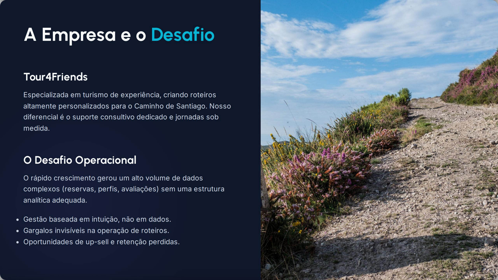
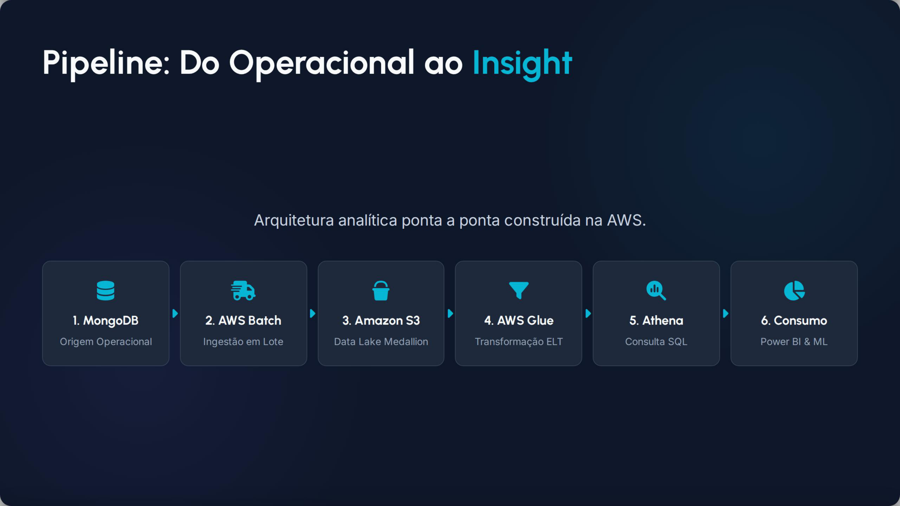
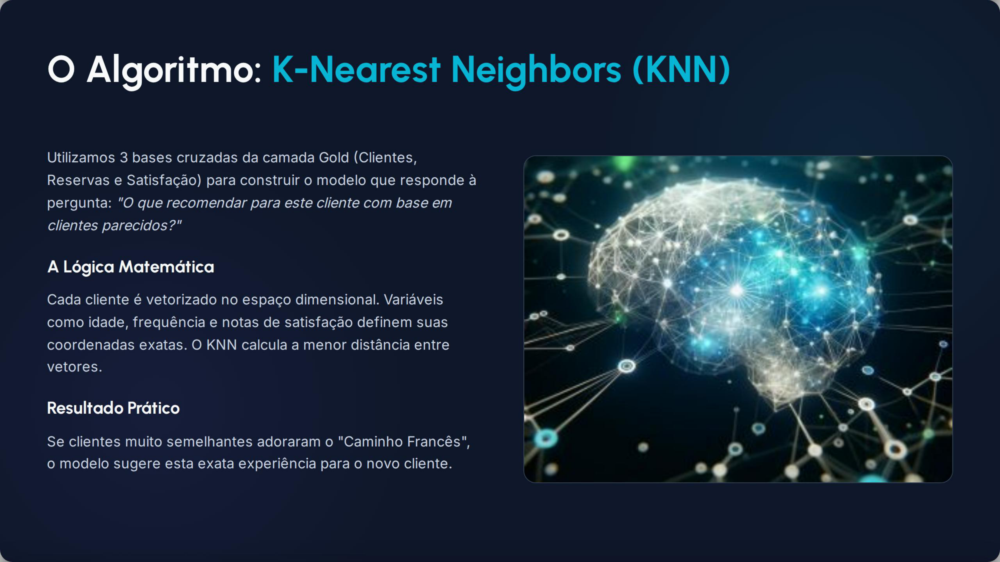
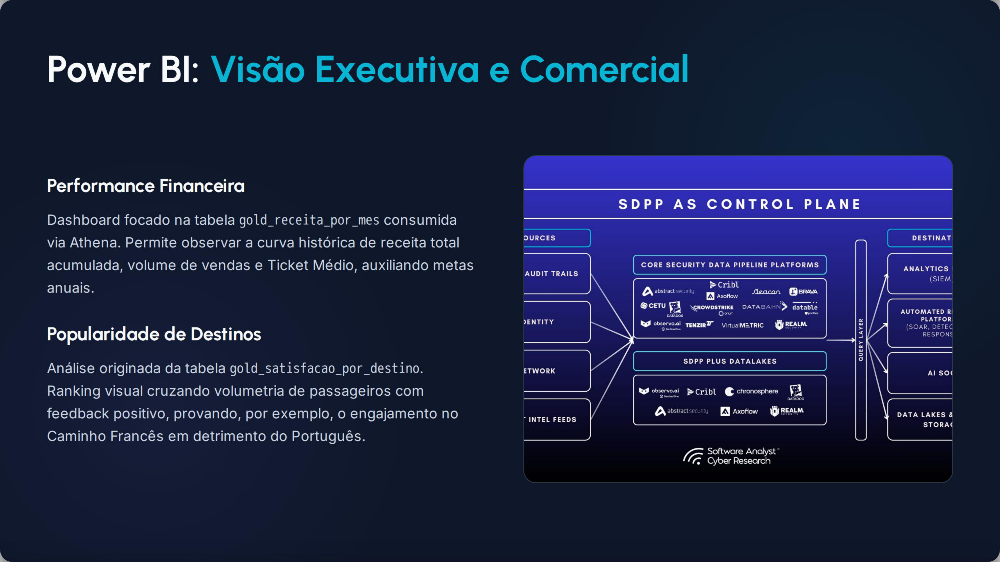

Tour4Friends Analytics & AI
Data Lake AWS e Inteligencia Artificial para transformar operacao, vendas e experiencia do viajante no Caminho de Santiago.
A Empresa e o Desafio
Tour4Friends
Empresa especializada em turismo de experiência com roteiros personalizados no Caminho de Santiago.
O Desafio Operacional
Gestão baseada em intuição, gargalos invisíveis na operação e perda de oportunidades de up-sell e retenção.

Pipeline: Do Operacional ao Insight
Arquitetura analítica ponta a ponta construída na AWS.

Data Lake Medallion
Bronze: Dados brutos JSON.
Silver: Dados processados em Parquet.
Gold: Datasets refinados para consumo.
AWS Glue & Athena
Transformação ELT automatizada e consultas SQL serverless de alta performance integradas ao Power BI.
Machine Learning & Recomendação
O Algoritmo KNN
K-Nearest Neighbors para recomendação de roteiros com base no perfil e satisfação de clientes semelhantes.
IA no Front-end
Interface Streamlit para que vendedores recebam sugestões dinâmicas de roteiros para os viajantes.

Visão Executiva e Estratégica
Performance Financeira
Acompanhamento de receita, volume de vendas e ticket médio via dashboards de BI.
Matriz Estratégica
Cruzamento de sazonalidade e rentabilidade para otimização de campanhas de marketing.

Resultados Consolidados
100%
Objetivos Atingidos
1
Modelo ML
4
Dashboards BI
6
Serviços Cloud
O Impacto Tour4Friends
A empresa abandona a era do "achismo operacional" e entra na maturidade de Big Data Analytics, conquistando visibilidade cirúrgica e fundação analítica ilimitada.